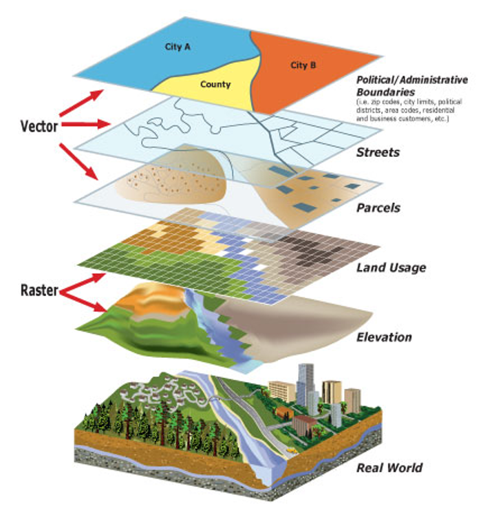
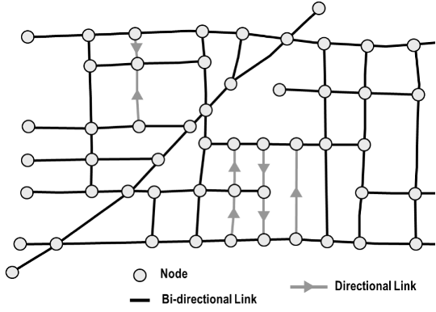

Introduction#
Welcome to Geospatial Data Science! In the first lecture we will provide an overview of the course including motivations, expectations, grading, and the schedule.
Lecture content#
Overview of course
What is geospatial data science?
Schedule and expectations
Lectures, labs, grading
Final projects
Introduction to Friday’s lab
Geospatial data#
Vector and Raster/gridded data#
{kind=link}
Network data#
{kind=link}
Python#
Popular high-level programming language
Easy-to-read
Extensive and mature libraries (or packages)
Free and open-source
Accessible
Can be examined, modified, and improved
Constantly evolving

Version control#
Git#
Version control software for tracking changes to a set of files

GitHub#
A cloud-based Git repository hosting service
Makes it easier to coordinate work among programmers collaboratively developing source code during software development

Python and projects that use Python (e.g.
matplotlib) are all maintained and developed by a community of scientists and programmers on GitHubAn active, up-to-date GitHub profile, with contributions to open-source project is a great way to provide evidence of skills
Course schedule#
Lectures#
Tuesday @ 9am
Nine lectures
Project presentations in Week 10
Labs#
Wednesday @ 9am in MCK 445
Seven lab assignments
Two labs to concentrate on final project
No lab in Week 10
Activities/project work#
Thursday @ 9am
Three activities
One lecture about previous class projects
Five sessions for project work
Project presentations in Week 10
{kind=link}
Course evaluation#
Lab assignments (45%) due every Wednesday 11:59 pm
Final project (45%)
Presentations due May 31, 11:59 pm
Write-ups due June 6, 11:59pm
Participation (10%)
Credit can be earned through attendance in lectures, visiting Professor and GE during office hours, and helping other students in labs.
Final project#
An opportunity to explore a particular topic of interest using some of the skills developed in this course
Students can work independently or in groups of two or three
Sharing of project ideas is encouraged so we can form teams
Final project schedule#
Week 5: Discuss project ideas with peers and instructors, submit a short summary of a project idea via Canvas
Week 6: Form teams, create GitHub repo, and provide some basic info about project as a README.md
Week 8: Provide informal update to instructors, ensure data has been accessed, goals are accomplishable
Week 10: Present project to class and submit write-up by the end of the week
Some course themes#
Everything is open-source#
All software we use is freely available
Labs can be completed anytime, anywhere from any OS
Course materials are publicly-available on the internet

Promote collaboration and communication#
With instructors and peers
On GitHub

Learn about environmental challenges in the Western US#
Urban planning
Hazards (e.g. wildfires, flooding)
Energy
Climate, hydrology, glaciology

Tips for success#
Don’t try and write perfect code - if it works, it works
It’s not always necessary to write code, adapting code is quite normal
Make use of stackoverflow
Don’t be afraid to ask (peers or instructors)

Take responsibility for learning
Organize your files
Check Canvas regularly
Maintain your GitHub profile and repository


Learning outcomes#
Have confidence using Python specifically for GIS and other geospatial data science applications. In doing so, you will also be comfortable using Python for other things as well
Be able to download, process, analyze, and visualize the main types of geospatial data
Automate boring GIS tasks (no more clicking!)
Improve programming skills
Learn how think computationally and statistically
Solve real-world problems using spatial analysis
Run basic machine learning models
Manage a data science project using version control
Collaboratively develop a data science project
Communicate results of data science project orally and as a short write-up
Careers#